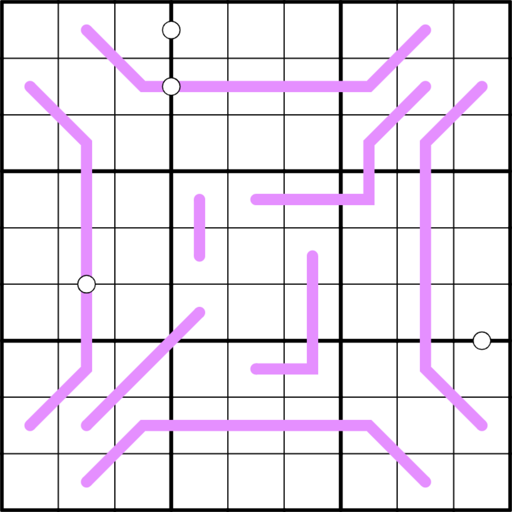

CPU - 🟠

LINK
REGELS:
- Standaard sudoku: Plaats de cijfers van 1 t/m 9 eenmaal in elke rij, kolom, en 3x3 blok.
- Custom: Lijnen zijn zowel Renban lines als Region sum lines.
- Renban line: De cijfers op een paarse lijn vormen een set van unieke opeenvolgende getallen in willekeurige volgorde.
- Region sum line: De grenzen van de 3x3 blokken splitsen blauwe lijnen in segmenten. De som van de cijfers van elk segment op een blauwe lijn is gelijk.
- White Kropki: Vakjes die gescheiden zijn door een witte stip bevatten opeenvolgende cijfers.